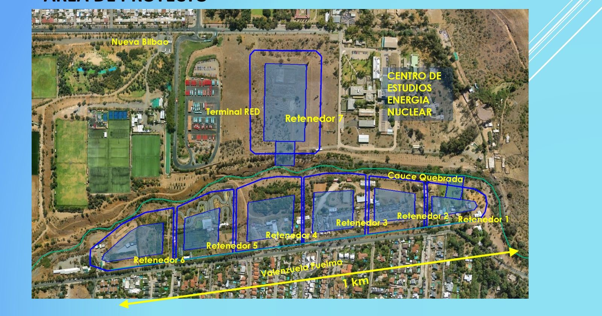
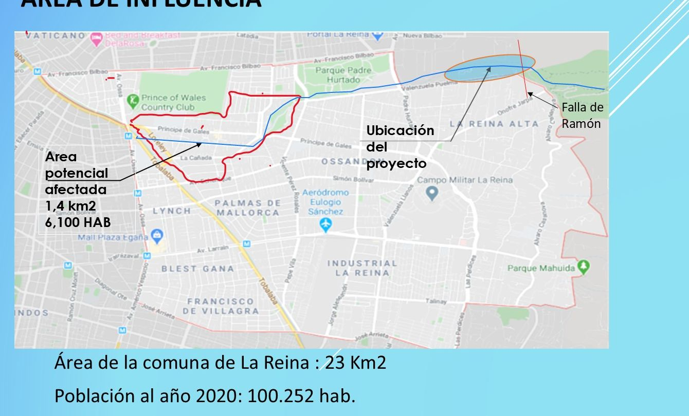
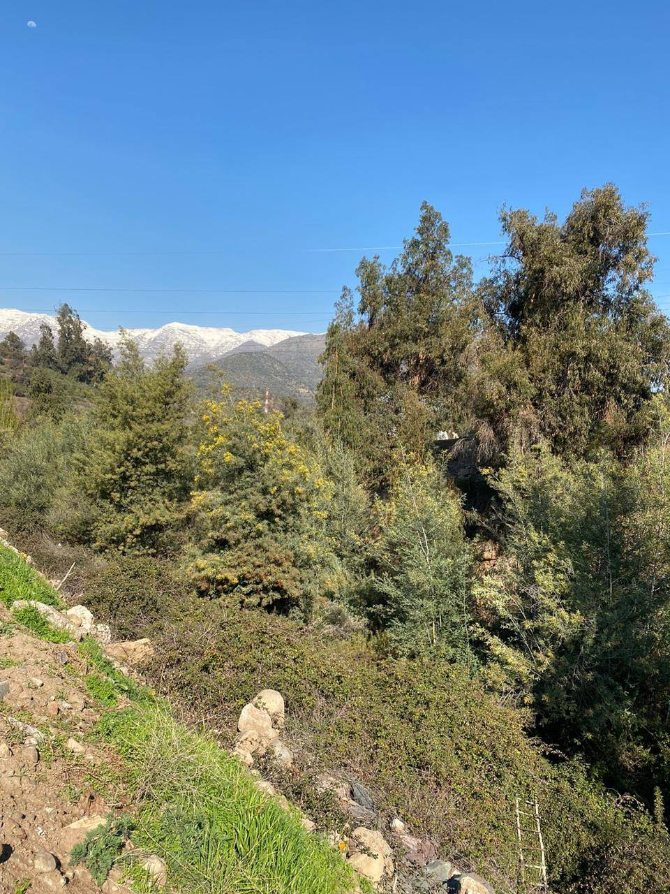
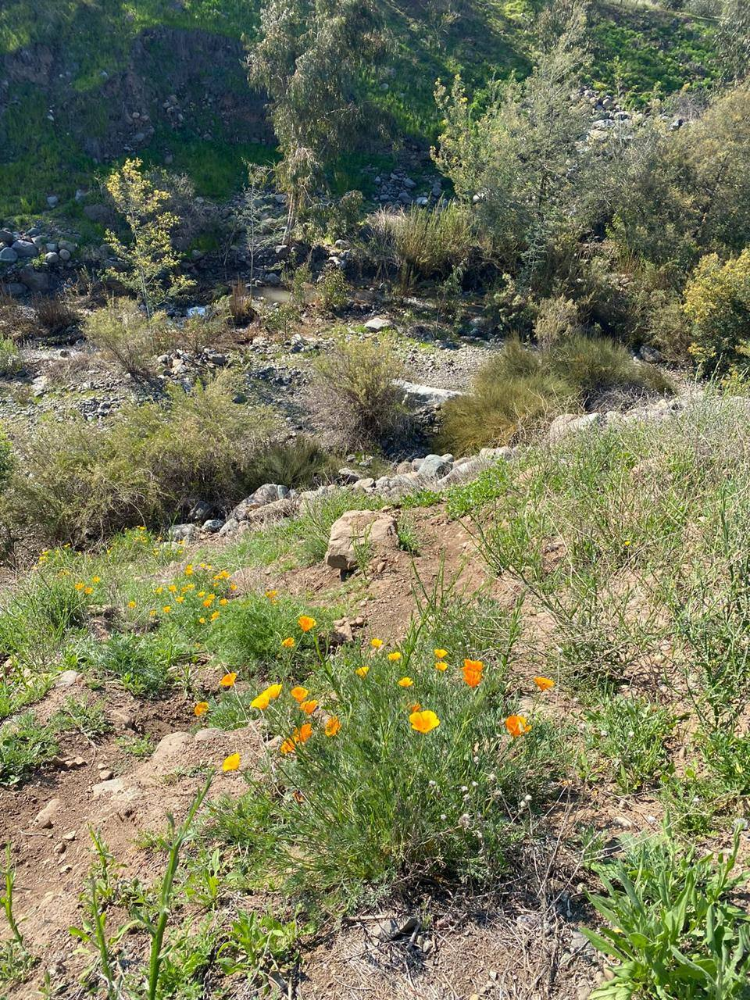
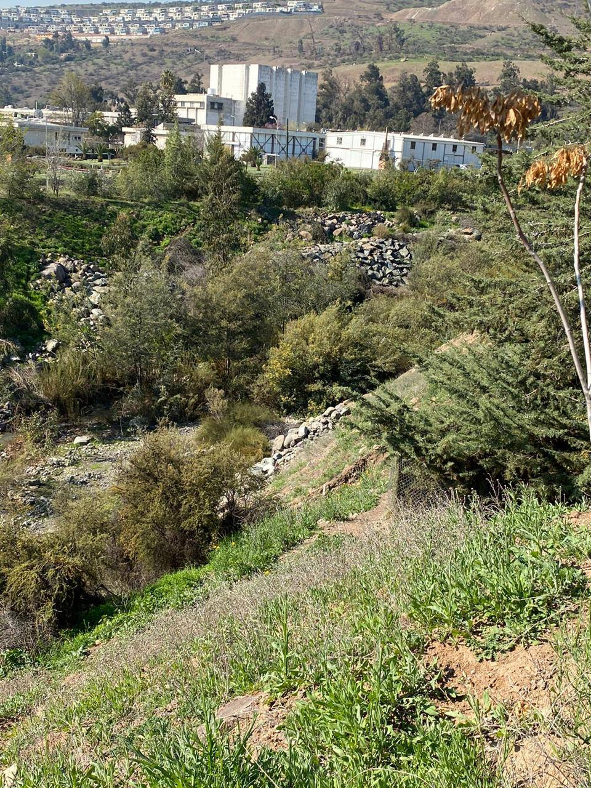
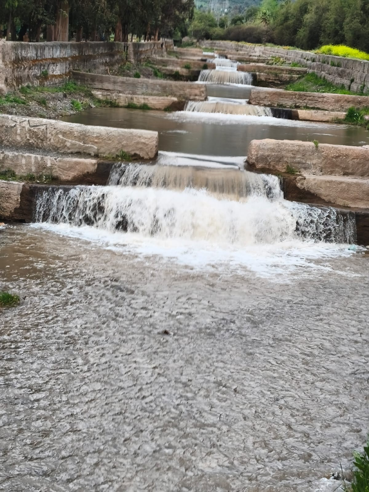
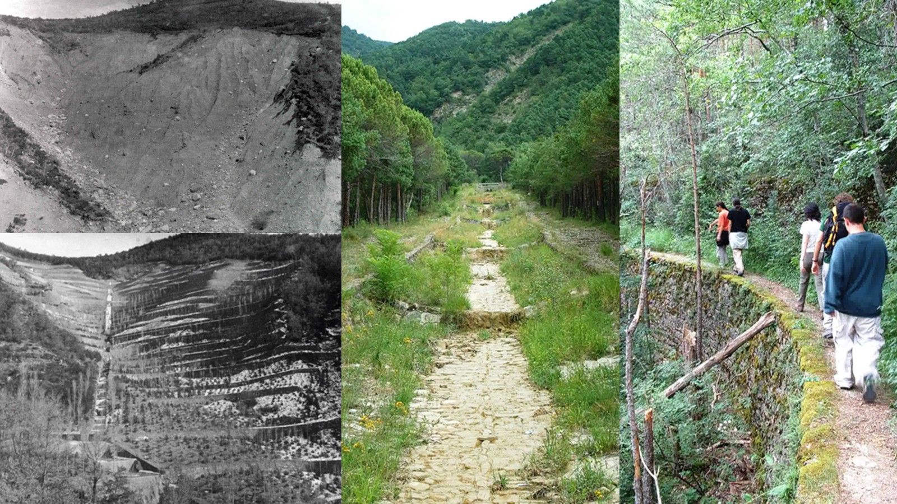

Aire y calidad de vida
Se advierte sobre polvo en suspensión, ruido y vibraciones provocados por excavaciones, maquinaria y transporte.
DOSSIER / QUEBRADA DE RAMÓN
El proyecto de control aluvional del MOP, la mirada de la comunidad y una propuesta para integrar seguridad, naturaleza y ciudad.
01 / CONTEXTO
Nombre oficial: “Obras para Control Aluvional y de Crecidas Líquidas, Quebrada de Ramón, Región Metropolitana”. Su titular es el Ministerio de Obras Públicas.


El objetivo es atenuar los caudales máximos de crecidas y eventos aluvionales. En la minuta presentada a la Cámara en 2024 se sitúan las obras en Las Condes, junto al límite con La Reina, y se describen efectos de construcción y operación sobre los vecinos de esta última comuna.
Cifras: SEA, 8 de mayo de 2026 . Localización: minuta vecinal de junio de 2024 .
EL ENTORNO EN IMÁGENES
Se comparten registros de vegetación, agua y paisaje aportados para conocer el entorno de la quebrada.



Fotografías aportadas para este sitio. Selecciona una imagen para verla completa.
02 / LA MIRADA VECINAL
Se advierte sobre posibles efectos del diseño y de la construcción en los antecedentes vecinales y en el documento aportado.
Se advierte sobre polvo en suspensión, ruido y vibraciones provocados por excavaciones, maquinaria y transporte.
Se estiman 184 camiones diarios para retirar material y se advierte sobre posibles efectos en Bilbao, Padre Hurtado y Américo Vespucio.
Se solicita revisar riesgos asociados a la falla de San Ramón, el acceso de emergencias al centro nuclear y la operación de los retenedores.
Se cuestiona la intervención del suelo y se solicita estudiar una solución integrada con vegetación, parques y usos comunitarios.
Se recogen observaciones del documento aportado y de fuentes vecinales. Las afirmaciones sobre ausencia de análisis o efectos esperados no se presentan aquí como conclusiones técnicas independientes. Consulta el documento, láminas 2 y 4–7.
03 / OBSERVACIONES TÉCNICAS
Síntesis de las observaciones que la comunidad ha documentado a partir del expediente de evaluación ambiental (EIA, adendas y reclamación).
Varios retenedores quedarían a menos de 100 m de la falla. En 2021 la Cámara recomendó no planificar infraestructura en sus fajas aledañas, y especialistas sugieren una franja de 300 m.
El Retenedor N°7 quedaría a 78 m del Centro de Estudios Nucleares La Reina (reactor RECH-1). El cálculo de vibraciones del MOP da 64,6 VdB contra un límite de 65, usando una norma de transporte público.
Se caracterizó el terreno con 4 calicatas superficiales, sin sondajes profundos. Los vecinos han encontrado bolones que debieron romperse con explosivos al construir sus piscinas.
Según los vecinos, el vaciado de los estanques no está diseñado y no se construyó el modelo físico a escala que recomendó el propio proyectista.
El MOP reconoce que superará los límites del plan de descontaminación durante varios años. La compensación propuesta (pavimentar 159 m de calle u otra forestación) no protege a los vecinos inmediatos.
El estudio base no incorpora escenarios de cambio climático. Desde 2024 se han registrado lluvias récord y tormentas convectivas inusuales en Santiago oriente.
Se presentaron cerca de 500 observaciones ciudadanas y otras 400 de servicios públicos. El MOP pidió un año para responderlas y el SEA le otorgó seis meses.
Cerca de las obras está el sitio Quebrada de Ramón 1. CONADI observó que se excluyeron organizaciones indígenas del área de influencia.
La inversión de 2016 (US$76,5 millones) no incluiría vaciado, explosivos ni accesos. El comité técnico vecinal proyecta US$150–200 millones (estimación no oficial).
«De ocurrir un evento durante la fase de construcción, los efectos del aluvión serían los mismos que podrían ocurrir actualmente, es decir sin proyecto.»
MOP, Adenda PAC 1, respuesta a planes de contingencia. Para los vecinos, significa que durante 8 a 10 años de obras no habría protección adicional, con excavaciones abiertas y maquinaria en el cauce.
Fuentes: presentación a la Comisión de Medio Ambiente (2024), presentación JJ.VV. N°14 (2025), carta a autoridades (2021) y análisis vecinal de 2026. Son observaciones de la comunidad sobre el expediente, no conclusiones de un organismo técnico independiente.

04 / PROPUESTA VECINAL
Se propone estudiar una combinación de intervenciones en el cauce y recuperación del entorno.
Propuesta descrita en las láminas 8–10 del documento. Su desempeño, costos y factibilidad requieren evaluación técnica; el adjunto no acredita una aprobación de esta alternativa.
05 / SOLUCIONES BASADAS EN LA NATURALEZA
El análisis vecinal de 2026 propone combinar seis tipos de intervención, que pueden funcionar por fases desde el primer año.
500–800 ha sobre los 1.500 msnm con quillay, boldo, peumo, litre y corontillo, y franjas ribereñas de 30 m.
AÑOS 1–38–12 diques escalonados, similares a los muros entre Padre Hurtado y Florencio Barrios, que funcionaron en las crecidas de 2023–2024.
AÑOS 1–28–10 mallas de alta resistencia que capturan bloques y flujos de detritos, con monitoreo remoto.
AÑO 1Fajinas vivas, mantas de fibra natural y enrocados con plantación en el tramo urbano, sin hormigonado masivo.
AÑOS 2–36–8 estaciones hidrometeorológicas y sensores que avisan con 20–40 minutos de anticipación. Puede implementarse de inmediato.
AÑO 1 · PRIORITARIOMejoramiento de alcantarillas críticas (Príncipe de Gales, Nueva Bilbao) y del tramo de confluencia con el Canal San Carlos.
AÑOS 2–3
| Aspecto | Proyecto MOP | Alternativa SbN |
|---|---|---|
| Inversión | US$150–200 millones (proyección vecinal) | US$22–41 millones (estimación referencial) |
| Plazo | 8–10 años | 2–4 años, por fases |
| Excavación | ~1.188.566 m³ | Menos de 20.000 m³ |
| Obras cerca de la falla | Sí, a menos de 100 m | No |
| Compatible con el plan regulador | No (zona de parque) | Sí |
| Cambio climático | No lo incorpora | Diseño adaptativo |
| Expropiaciones | Sí | No |
| Beneficios ecológicos | No se identifican | Biodiversidad, agua y paisaje |
Importante: según el propio documento, los costos de la alternativa SbN son órdenes de magnitud estimados con asistencia de inteligencia artificial a partir de referencias internacionales y del expediente. No reemplazan un estudio de prefactibilidad. Leer el análisis completo
06 / LAS DOS PROPUESTAS
Síntesis explicada del cuadro de la lámina 11 del adjunto. Se presenta la comparación recogida en el documento aportado.
| Aspecto | Proyecto MOP Según el documento | Propuesta de los vecinos Según el documento |
|---|---|---|
| Solución | Se describen siete retenedores profundos, fuera del cauce. | Pantallas dentro del cauce para reducir la velocidad y el arrastre, junto con arborización hasta la cota 1.000. |
| Funcionamiento | Se señala un umbral de crecidas superior a 20 m³/s. | Se plantea su funcionamiento con caudales pequeños y grandes. |
| Plazo | Se estima un plazo de 8 a 10 años y se señala que el sistema requiere la obra completa. | Se plantea una implementación con funcionamiento desde las primeras obras. |
| Movimiento de tierra | Se compara el movimiento de tierra con trasladar el cerro Santa Lucía. | No se aporta una estimación de volumen. |
| Aire, ruido y vibraciones | Se advierte sobre impactos de excavación, maquinaria y transporte. | Se propone conservar y recuperar la vegetación del entorno. |
| Tránsito | Se estiman 184 camiones diarios solo para retirar material y se advierte sobre efectos en pavimentos. | No se aporta una estimación de tránsito. |
| Seguridad | Se cuestionan los análisis relativos a la falla de San Ramón, el reactor y riesgos por fallas de construcción. | Se afirma que no afecta al reactor, sin acompañar un estudio que lo demuestre. |
| Uso del espacio | Se cuestiona la pérdida de suelo que podría destinarse a áreas verdes. | Senderos, ciclovía e integración con parques y espacios recreativos. |
| Antecedente local | Se analiza el diseño presentado por el MOP. | Se citan estructuras existentes entre Padre Hurtado y Florencio Barrios como referencia. |
Se estiman 8–10 años en el documento aportado y 7 años en la minuta vecinal de 2024. Corresponden a fuentes y momentos distintos. Se conservan fechas de plantilla “20XX”, por lo que no se determina con certeza la fecha de presentación.
Ver el cuadro original, lámina 1107 / ANTECEDENTES EN EL TIEMPO
El 31 de marzo los vecinos conocen por primera vez la idea de retenedores aluvionales. Al año siguiente (23 de agosto de 2016) se realiza una participación temprana con información distinta a la del diseño final.
Se registra el ingreso ambiental en marzo. La participación ciudadana corre entre el 6 de junio y el 6 de septiembre; La Reina no había sido convocada en la consulta inicial. El 24 de octubre se crea la petición “Cuidemos Quebrada de Ramón” y en noviembre la JJ.VV. N°14 escribe a las autoridades.
Carta a autoridades PeticiónEl 25 de julio se realiza la 5ª sesión de la mesa técnica tripartita (vecinos, Municipalidad y MOP), con participación de CONAF. El 2 de agosto la SECPLAN de La Reina pide a CONAF asesorar al MOP en un plan de protección y conservación de la cuenca.
Ord. N°33 y actaEl 10 de junio la JJ.VV. N°14 expone ante la Comisión de Medio Ambiente y solicita una justificación técnica, expertos independientes y una mesa técnica ciudadana.
Presentación Minuta en la CámaraEn marzo se difunde la labor del comité técnico vecinal y en abril la JJ.VV. N°14 presenta su análisis, con plazo del MOP al 7 de abril para responder la tercera ronda de observaciones. La RCA favorable se dicta el 25 de agosto y en octubre se admite una reclamación.
Presentación abril 2025 Publicación vecinal Notificación BCNEn abril la comunidad publica un análisis con una alternativa basada en la naturaleza. El 8 de mayo el SEA comunica la ratificación de la RCA por el Comité de Ministros.
Análisis SbN Comunicación SEA08 / FUENTES Y DOCUMENTOS
“Obras de control aluvional y de crecidas en Qda. de Ramón”. Se incluye la presentación de antecedentes con cuadro comparativo aportada para este sitio.
Reunimos los documentos de la defensa de la quebrada desde 2021, con descarga directa.
Se distingue el estado administrativo, documentado en fuentes oficiales, de las posiciones vecinales recogidas en publicaciones comunitarias y en el adjunto. Se presentan los antecedentes consultados el 9 de octubre de 2026.